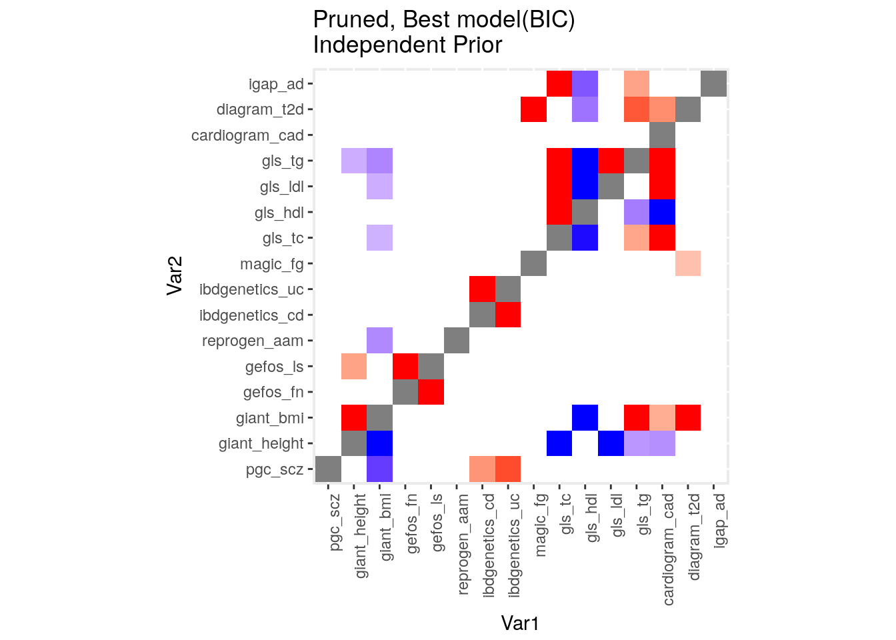
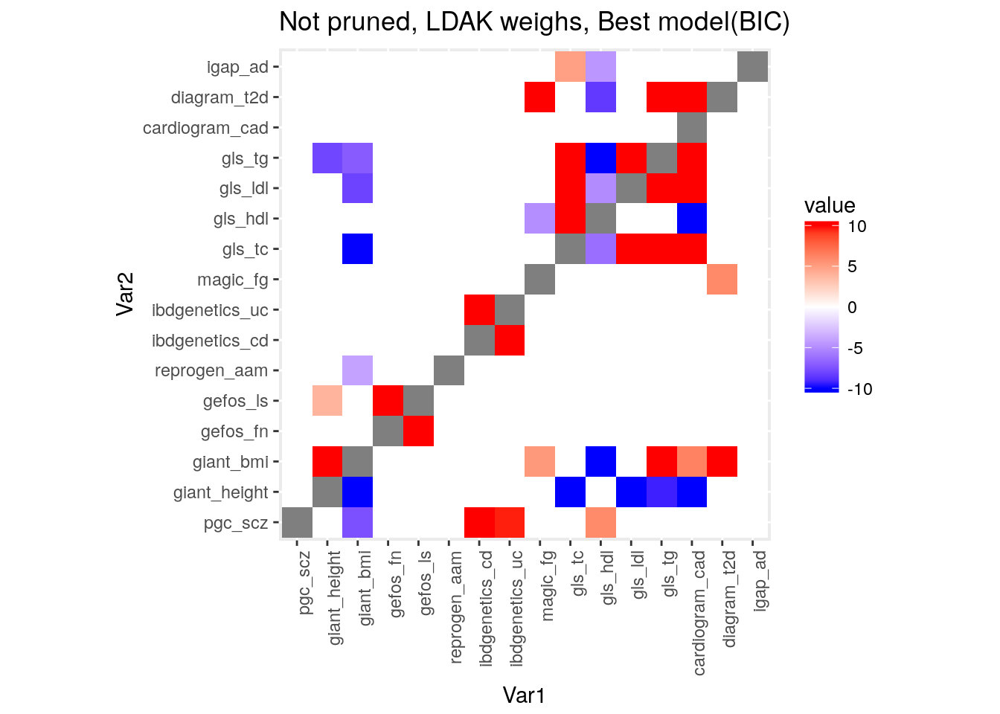

Analysis of 16 GWAS traits
Jean Morrison
May 18, 2017
Introduction
We analyzed 16 of the GWAS traits analyzed by Pickerell et al. For each pair of traits, I fit four models using the two factor model:
- \(\lambda_{12} = \lambda_{21} = 0\)
- \(\lambda_{12} = 0\), \(\lambda_{21}\) unconstrained (allow an effect form trait 1 to trait 2)
- \(\lambda_{21} = 0\), \(\lambda_{12}\) unconstrained (allow an effect form trait 2 to trait 1)
- \(\lambda_{12}, \lambda_{21}\) both unconstrained (allow effects in both directions)
For these fits I set the distribution of \(\alpha_1\) and \(\alpha_2\) using the ASH priors estimated for traits 1 and traits 2 separately. I assume the priors are independent.
Results on pruned data set
Effect sizes in the best fitting model in data pruned for LD at a theshold of 0.1 and with LDAK weights: 
Effect sizes in the full model in data pruned for LD at a theshold of 0.1 and with LDAK weights:: 
A handmade list of differences from Pickerell et al:
| Trait 1 | Trait 2 | Best Model | Pickerell et al |
|---|---|---|---|
| scz | bmi | - | 0 |
| height | ad | 0 | - |
| bmi | height | + | 0 |
| bmi | cad | + | 0 |
| bmi | aam | 0 | - |
| fn | t2d | 0 | + |
| ls | height | + | 0 |
| aam | hdl | 0 | + |
| aam | ls | 0 | - |
| aam | height | 0 | + |
| aam | cd | 0 | + |
| cd | ad | 0 | - |
| tc | bmi | - | 0 |
| tc | hdl | - | 0 |
| tc | ldl | 0 | + |
| tc | aam | 0 | + |
| hdl | aam | 0 | + |
| hdl | cad | - | 0 |
| ldl | hdl | - | 0 |
| ldl | tg | 0 | + |
| tg | height | - | 0 |
| tg | bmi | - | 0 |
| t2d | hdl | - | 0 |
| t2d | cad | + | 0 |
| ad | tc | + | 0 |
| ad | hdl | - | 0 |
| ad | tg | + | 0 |
Results using all 1.7 million SNPs
Effect sizes in the best fitting model in data with no LD pruning and with LDAK weights: 

Difference in models: 


This R Markdown site was created with workflowr